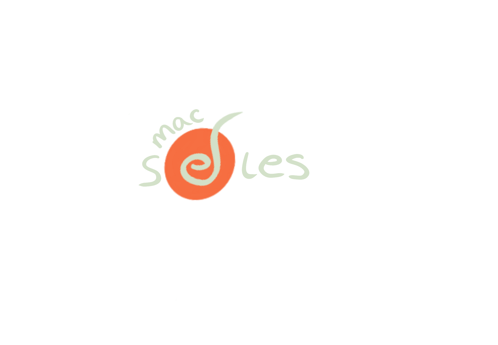
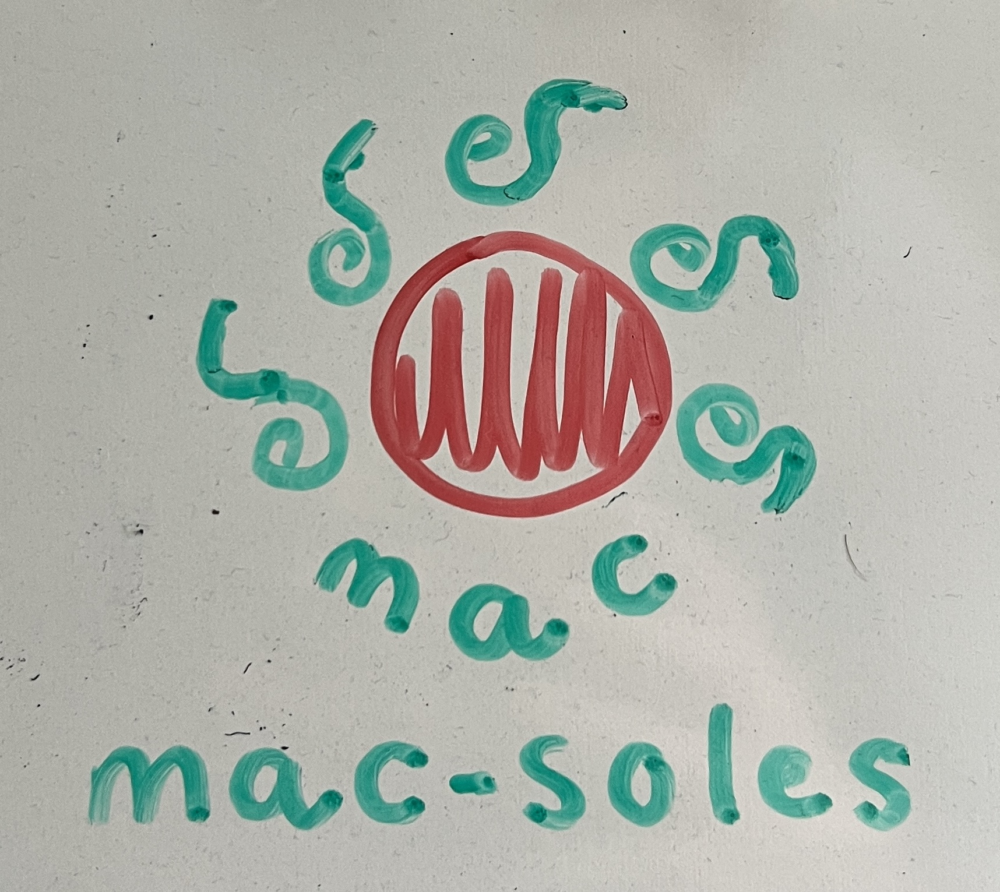
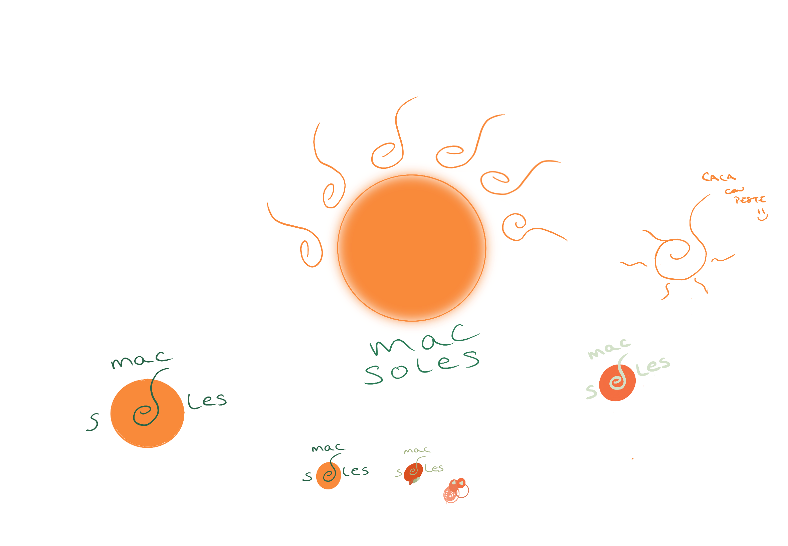

Evolution

v0
Painted on a wall with a marker. No software, no grid. The SOL + ES concept was there from the start — the terracotta circle is the sun (SOL), and the merged eS glyph inside is the ray (ES). Together: SOLES.
The teal and terracotta palette was intuitive, pulled from Mediterranean colour memory.

v1
Digitising and refining what was already in v0. Testing scale, composition, how the symbol sits inside the wordmark. The full-sun version with multiple rays was tried but felt too literal — the single eS glyph was always the stronger idea.
v2
The wordmark and symbol became one thing. "mac" sits above as a quiet maker's mark. Teal became sage-olive — warmer, less tropical. The terracotta circle stayed exactly as in v0.
SOL (the circle) + ES (the merged glyph inside) = SOLES. The mark doesn't reference the name — it is the name.
?
Keep
Blind study confirmed: warm, artisanal, Mediterranean. The concept lands. The imperfection is the personality — just make the imperfections feel chosen.
Resolve
The eS concept is right, but cold eyes still read it as a music note or shell. V3 needs to make the eS intent legible without over-explaining it.
Fix
The sage green is losing the fight against the orange. A slight saturation bump or thicker stroke on the letterforms would restore the balance.
"mac" floating above reads as an afterthought. Either commit to it as a small personal signature stamp, or bring it to the same baseline as "soles" and let the full name read as one wordmark.